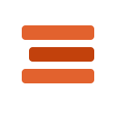

Query the orders catalog
Rows show up here.
Policy
Allow, deny, or rewrite, with the reasons.
Catalog Durable Objects
Each catalog id maps to its own object.
DuckDB CLI
Run a query to mint a ten-minute read-only token.

Tech DemosWhat this proves A DuckLake-style catalog can live on Workers. DuckDB’s Quack HTTP protocol hits POST /quack. A registry Durable Object routes each catalog to its own SQLite object. JWT roles are checked against row and column rules before SQL runs. The sample table is also Parquet in R2.
Finish the check, then run a statement. The log stores the role and the decision, not the SQL. The catalog is read-only and resets at midnight UTC.
Query the orders catalog
Rows show up here.
Policy
Allow, deny, or rewrite, with the reasons.
Catalog Durable Objects
Each catalog id maps to its own object.
DuckDB CLI
Run a query to mint a ten-minute read-only token.